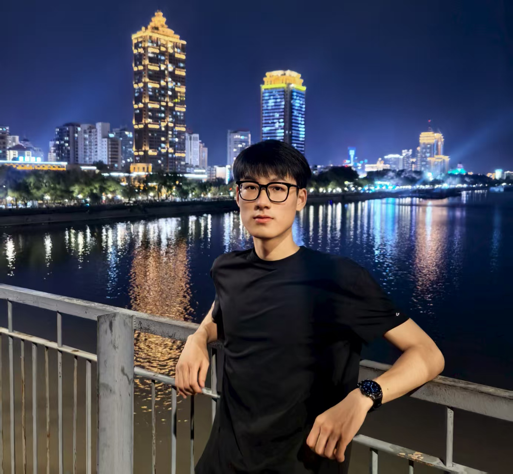

Jinqi Wu 武锦旗Bachelor StudentJilin University 596160575@qq.com | Github |
 |
About me
I am Jinqi Wu, currently a student majoring in Computer Science and Technology at Jilin University. I am currently conducting research on multimodal large language models as an intern in Professor Chaoyou Fu 's group at the School of Intelligence Science and Technology, Nanjing University. My research interests lie in the architecture design and implementation of multimodal large language models, as well as cross-modal understanding and generation.
News
- [2025.08]: I began a research internship at Alimama Ad Tech Department, focusing on Recsys and LLM.
- [2025.05]: I joined Professor Chaoyou Fu 's research group at the School of Intelligent Science and Technology, Nanjing University.
Education
-
 Nanjing University | Intelligence Science and Techonolgy
Nanjing University | Intelligence Science and Techonolgy
2026.09 - Present
Supervisor: Prof. Chaoyou Fu
-
Jilin University | Computer Science and Techonolgy
2022.09 - 2026.06
GPA: 3.9/4.0 (Rank: 1/350)
Publications
NoneInternship
-
Alibaba Taotian Group - Alimama Ad Tech Department
2025.08 - Present | Beijing
Topic: Conversion Intent Understanding Large Model (Recsys+LLM)
Honors & Awards
- [2025.05]: Gold Medal, ICPC National Invitational Contest (Nanchang)
- [2025.04]: Ranked in the top 0.11% with a score of 430 in the 37th CCF CSP
- [2024.12]: National Scholarship for Undergraduate Students
- [2024.11]: Silver Medal, ICPC Asia Regional Contest (Nanjing)
- [2024.11]: Liberation Navigation Scholarship (FAW Jiefang Automotive Co., Ltd.)
- [2024.10]: First Prize, CCF Collegiate Computer Systems & Programming Contest
- [2023.12]: National Scholarship for Undergraduate Students
| © Jinqi Wu | Last update: August 2025 |